Fenton presenta una interfaz gráfica amigable para que un usuario pueda utilizar un cluster previamente configurado para este fin, sin necesidad de conocer los pormenores de su funcionamiento. Para ésto el sistema cuenta con dos niveles de usuarios: clientes y administradores. Los clientes mantendrán sus archivos en el cluster, ejecutarán procesos y obtendrán los resultados de los mismos. Por otro lado los administradores mantendrán la información necesaria para que el sistema funcione correctamente. El presente documento está dividido por tipo de usuario.
Las distintas vistas del administrador están orientadas hacia un usuario con ciertos conocimientos mínimos, tanto del funcionamiento del cluster como de manejo de aplicaciones. Por lo tanto, en la mayoría de los casos, las funcionalidades son más prácticas que amigables. De esta manera, un usuario que utilice frecuentemente el sistema necesitará pocos pasos para obtener el objetivo buscado, mas allá de que en una primera aproximación deba recurrir al manual más de una vez.
El usuario deberá ingresar su nombre de usuario y su clave. Por seguridad, en caso de que alguno de los valores sea incorrecto no se indicará de cuál de los dos se trata. Inicialmente existe un usuario administrador con nombre GROSO y clave del FENTON O ALGO, pero luego de haber ingresado al sitio, el administrador podrá modificar la clave o agregar un nuevo administrador y borrar el usuario inicial.
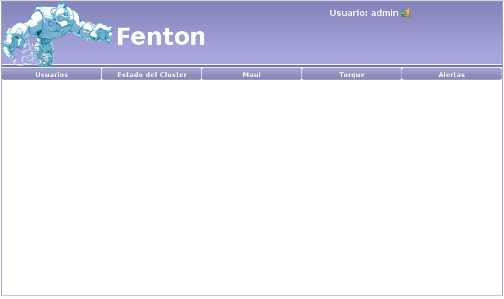
Inicialmente al administrador se le presentarán las opciones por categorías:
El manejo de usuarios del sistema está subdividido por:
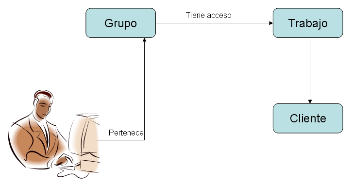
Cada usuario del sistema estará asociado a un grupo. A su vez cada grupo tendrá acceso a uno o más trabajos. Por ejemplo, mientras que el usuario administrador seguramente deberá tener acceso a todos los trabajos, un usuario final probablemente tendrá acceso a un único trabajo.
A su vez, cada trabajo estará asociado a un cliente. Cada cliente del sistema tendrá un usuario linux asociado, por lo que es importante recordar que todos los trabajos que se ejecuten para un mismo cliente, tendrán el mismo usuario linux.
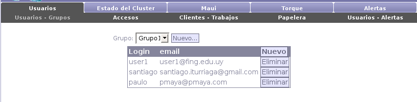
Cada usuario del sistema tendrá un nombre de usuario, una dirección de correo electrónico y una contraseña. Cada uno es creado bajo un grupo, seleccionándolo y presionando el boton “Nuevo” en la tabla que lista los usuarios. Es posible también eliminar usuarios del sistema.
Para crear un nuevo grupo es necesario presionar el botón “Nuevo...” que se encuentra a la derecha de la lista de grupos del sistema. Luego se deberá ingresar un nombre para el mismo y asociarle las funcionalidades pertinentes.
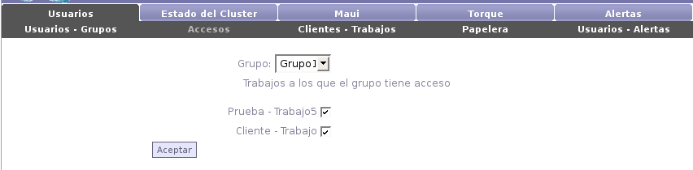
Para administrar los accesos a los trabajos del sistema, se deberá seleccionar un grupo. A continuación se mostrarán todos los pares cliente - trabajo dados de alta en el sistema. Simplemente seleccionando cada casilla se le estará dando acceso a todos los integrantes del grupo a los respectivos trabajos.
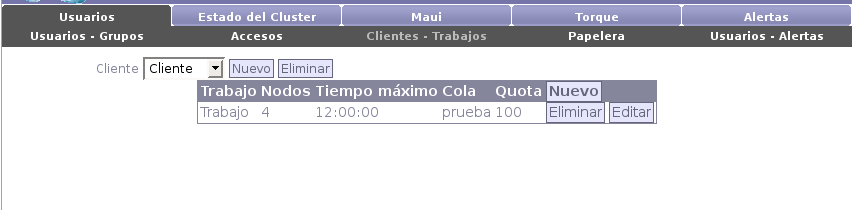
Para crear un nuevo trabajo es necesario tener por lo menos un cliente creado. Para esto se deberá presionar el botón “Nuevo” (a la derecha de la lista de clientes). A continuación se mostrarán los campos a llenar:
Luego de haber creado el cliente, se presentará la opción de crear un nuevo trabajo para el mismo presionando el botón “Nuevo” mostrado en la tabla de trabajos. A continuación se mostrarán los campos a llenar:

En cualquier momento el administrador podrá eliminar tanto los trabajos como los clientes. Si elimina un trabajo, ningún usuario tendrá acceso al mismo, pero este podrá ser restaurado desde la papelera. Por otro lado, si elimina un cliente, será eliminado físicamente junto con sus respectivos trabajos, incluyendo los archivos guardados en disco.
Desde la papelera es posible tanto eliminar como restaurar los trabajos. Si se elije eliminarlos, se borrarán los archivos guardados en disco junto con el resto de la información del trabajo. Si se elije restaurarlos, los usuarios podrán nuevamente tener acceso a los mismos.
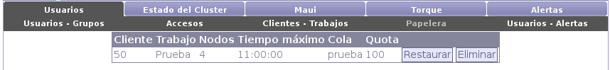
PAULO

ITU

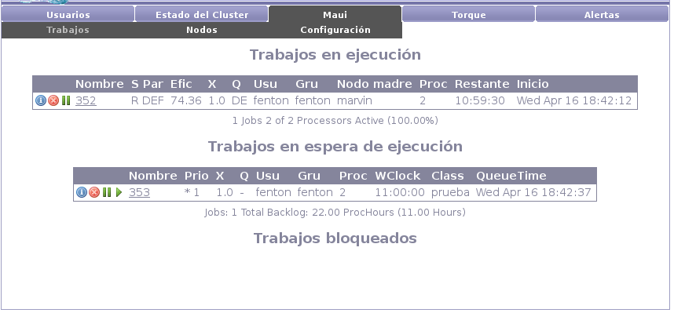

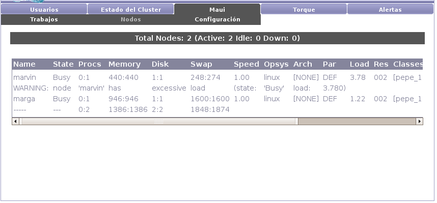


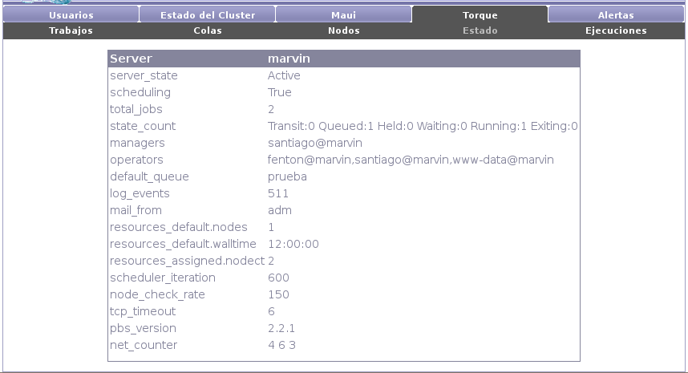

PAULO

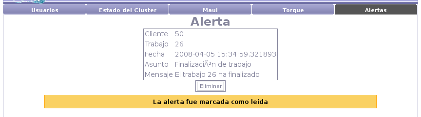
Un usuario cliente de Fenton no necesita conocer los pormenores del funcionamiento de un cluster para poder utilizar el sistema. En todos los casos se tuvo en cuenta la amigabilidad y facilidad de uso para proveer al usuario de funcionalidades claras y simples. El usuario no tendrá inconvenientes para empezar a utilizar el sistema una vez que el administrador le asigne los privilegios necesarios.
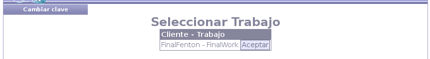
El usuario deberá ingresar su nombre de usuario y su clave. A continuación, si el nombre y la clave fueron correctos, se mostrarán los trabajos a los que el usuario tiene acceso.
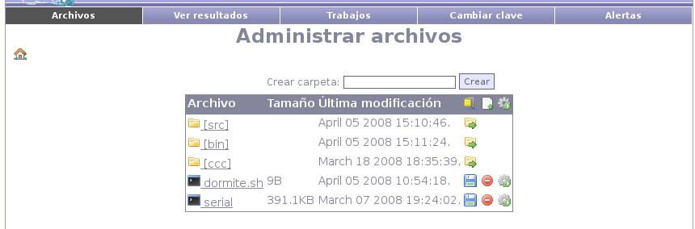
Luego de seleccionar uno de ellos se mostrará la página de administración de archivos.
Desde la página de administración de archivos estarán las funcionalidades más usuales para el usuario final.
En primer lugar podrá subir archivos individualmente mediante el botón de “nuevo” (segundo botón en la barra). A continuación se mostrará un espacio para seleccionar el archivo y un botón de aceptar. Si en lugar de un archivo corriente se seleciona un archivo zip, el mismo será automáticamente descomprimido en la carpeta en que se encuentre el usuario.
Los archivos creados pueden ser borrados, con la salvedad de que las carpetas deben estar vacías para poder ser eliminadas.
El usuario podrá a su vez descargar un archivo zip con el contenido del proyecto presionando el primer botón de la barra.

El tercer botón en la barra da la opción de ejecutar un makefile o el comando mpicc, permitiendo además el pasaje de argumentos.
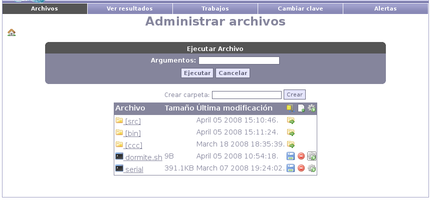
Los archivos ejecutables tendrán una tercera opción (ademas de descargar y eliminar) que será la de ejecución. Presionando este botón, se desplegará un campo a rellenar con los argumentos de ejecución (opcional) y la opción de ejecutar. Luego de aceptar, se mostrará la página de resultados con la salida del ejecutable.

Luego de ejecutar un archivo se mostrará la salida del mismo. En la barra lateral se mostrará:

En cualquier momento será posible consultar por el histórico de ejecuciones. Es importante notar que las salidas de cada ejecutable son dos: por un lado se guarda la salida habitual (salida más salida de error) y por otro se guarda la salida de Torque (el administrador de recursos del cluster).
Presionando el botón “Ver” se mostrará la página de salida del ejecutable, mientras que si se presiona el botón “Log” se mostrará la salida de Torque en la parte inferior de la página.

El usuario luego de haberse logueado podrá cambiar su clave (recomendado la primera vez que ingrese al sitio) ingresando su clave actual, y dos veces su nueva clave.
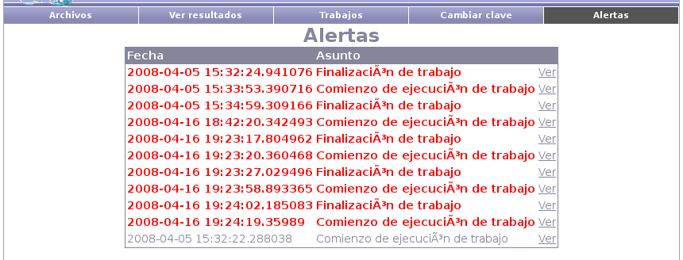
PAULO
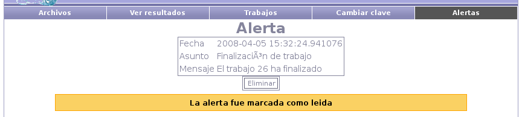